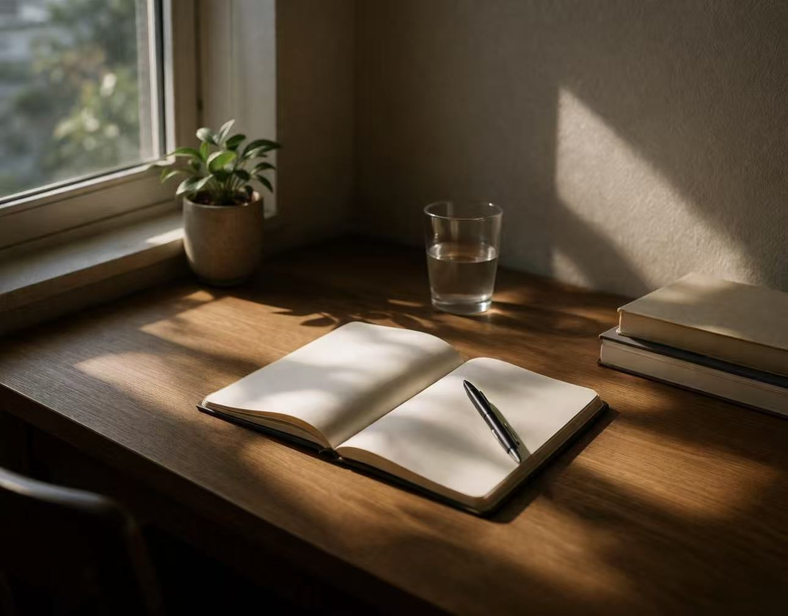

A small space for big curiosity
Make room
for wonder.
A little corner of the web for good words, fresh ideas, and the joy of making something just because.
Find your next idea TAKE YOUR TIME. STAY CURIOUS.
01THE STUDIO
A soft landing
for curious people.
The best things often begin with a small question.
Small Steps Studio is a collection of thoughts and playful starting points for anyone who likes to learn by looking closer. Wander through a handful of thoughtful quotes, discover a project idea, or take a tiny break with our delightfully pointless machine.
A few words to keepA LITTLE OF EVERYTHING
Follow your curiosity.
Pick a path. There is no wrong way to begin.